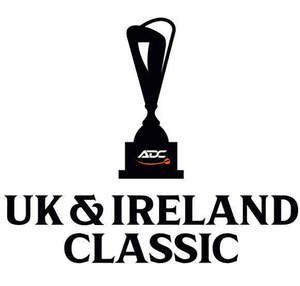
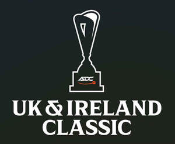

Trade Mark Journal No.2025/030 25 July 2025
UK00004233498 14 July 2025 (9,16,25,28,35,38,41)
Mark 1

Mark 2

- Class 9
- Computer software relating to sports, physical activities, competitions, and entertainment; Mobile applications relating to sports, physical activities, competitions, and entertainment; Computer games; Software for playing sports related games; Software for playing darts games; Software for analysing sports related games; Software for analysing darts games; Software for the automatic analysis of darts games; Automatic scoring software; Mobile apps for playing sports related games; Mobile apps for playing darts games; Mobile apps for analysing darts games; Computer hardware for the automatic analysis and playing of sports games; Computer hardware for the automatic analysis and playing of darts games; Computer hardware for automatic scoring; Downloadable electronic publications; Publications in electronic format; Media content; Media content in relation to sports; Media content in relation to darts games, events, competitions and tournaments. .
- Class 16
- Printed matter relating to sports, physical activities, competitions, and entertainment; Printed matter relating to darts; Printed publications relating to sports, physical activities, competitions, and entertainment; Printed publications in relation to sports; Printed publications in relation to dart games and competitions; Printed promotional publications; Printed promotional publications in relation to sports competitions and events; Printed promotional publications in relation to darts competitions and events; Printed educational material; Printed educational and instructional material; Cards; Sports trading cards; Posters; Photographs; Packaging materials; Stickers; Stationery; Pens; Pencils.
- Class 25
- Clothing; Footwear; Headwear; Sports clothing; Sportswear; Clothes for sport; Articles of sports clothing; Clothing for darts; Leisure clothing; Sports garments; Sports footwear; Sports shirts; T-shirts; Shirts; Dart shirts; Polo shirts; Sweatshirts; Hooded sweatshirts; T-shirts; Long sleeved t-shirts; Tops; Vest tops; Jackets; Coats; Trousers; Jeans; Shorts; Skirts; Hats; Caps; Visors; Beanies; Swimwear; Sports shoes; Footwear used for darts; Trainers.
- Class 28
- Games; Toys and playthings; Gymnastic and sporting articles; Video game apparatus; Darts; Barrels for darts; Holders for darts; Dart shafts; Articles for playing darts; Dart points; Dart mats; Dart wallets; Dart flights; Dart boards; Dart board overlays; Containers adapted for holding darts; Dart board cabinets; Containers adapted for holding darts flights.
- Class 35
- Advertising; Advertisement services; Advertising and publicity; Advertising in relation to sports management, competitions and events; Advertising in relation to darts games management, competitions and events; Advertising, promotional and marketing services; Online advertising; Online advertising in relation to sports management, competitions and events; Online advertising in relation to darts games management, competitions and events; Promotion, advertising and marketing of on-line websites; Promotion, advertising and marketing of sports competitions and events; Promotion, advertising and marketing of darts competitions and events; Promotion of sports competitions and events; Promotion of darts competitions and events; Talent agency services; Sports management services; Sports management services for professional athletes; Sports management services for professional darts players; Business management, organization and administration; Business management in relation to sports; Business management in relation to dart games; Business management of sports personalities; Office functions.
- Class 38
- Telecommunications services; Messaging services; Providing online forums; Providing internet chat rooms; Video, audio and television streaming services; Video, audio and television streaming services in relation to sporting events, competitions and contests; Video, audio and television streaming services in relation to darts events, competitions and contests; Streaming of video material on the internet; Streaming audio and video material on the internet; Streaming of audio material on the internet; Streaming of television over the internet; Streaming of audio, visual and audiovisual material via a global computer network; Audio and video broadcasting services provided via the internet; Broadcasting of video and audio programming over the internet; Broadcasting of sporting events, competitions and contests; Broadcasting of darts events, competitions and contests; Audio, video and multimedia broadcasting via the internet and other communications networks; Broadcasting of audiovisual and multimedia content via the internet; Provision of telecommunication access to video and audio content provided via an online video-on-demand service; Transmission of data, audio, video and multimedia files, including downloadable files and files streamed over a global computer networks; Transmission of audio and video content via computer networks; Live transmissions accessible via home pages on the internet [webcam]; Transmission of videos, movies, pictures, images, text, photos, games, user-generated content, audio content, and information via the internet.
- Class 41
- Entertainment; Sporting and cultural activities; Organisation of sporting events; Arranging of sporting events; Organising of sporting events, competitions and tournaments; Organisation of darts tournaments; Organisation of recreational darts tournaments; Organising of darts events, competitions and tournaments; Arranging of events, competitions and tournaments; Staging of darts tournaments; Electronic publishing services; Publication of texts and images in the form of electronic media; Publication of texts and images in the form of electronic media in the field of sporting events, competitions and tournaments; Publication of texts and images in the form of electronic media in the field of darts events, competitions and tournaments; Provision of training; Provision of training in relation to sports, physical activities, competitions, and entertainment; Provision of training in relation to darts; Education; Education in relation to sports, physical activities, competitions, and entertainment; Education in relation to darts.
Amateur Darts Circuit Limited
Representative: Trade Mark Wizards Limited